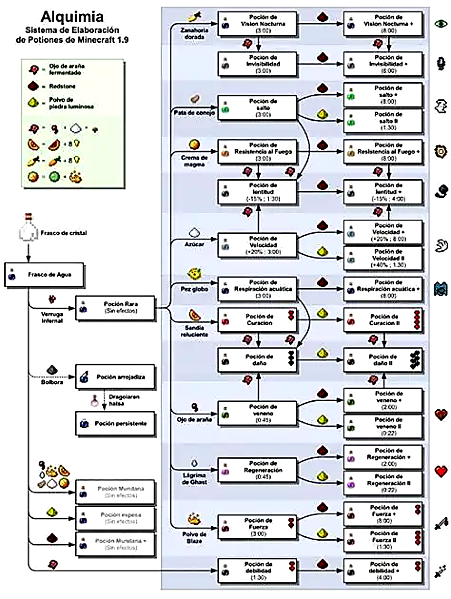

.recursos { padding: 40px; background: #111; text-align: center; } .categoria { margin-top: 40px; } .categoria h3 { background: #2ecc71; color: white; padding: 10px; } .links-grid { display: grid; grid-template-columns: repeat(auto-fit, minmax(250px, 1fr)); gap: 15px; margin-top: 15px; } .card-link { background: #1e1e1e; padding: 15px; border-radius: 10px; box-shadow: 0 0 15px rgba(0,255,150,0.3); } .card-link a { text-decoration: none; color: white; background: #27ae60; padding: 10px 15px; display: inline-block; border-radius: 5px; margin-top: 10px; } .card-link a:hover { background: #2ecc71; }
Inicio
Crafteo y fundicion
Encantamientos y pociones
Granjas automaticas
Redstone
Mods y Texturas
Encantamientos y pociones
Videos recomendados de Pociones
Guías de Pociones
Todas las pociones en 15 min
Ver video
Wiki oficial de pociones
Ir al sitio Web
Cómo usar el soporte de pociones
Ver video
Todas las recetas paso a paso
Ver video
Pociones más útiles del juego
Ver video
Trucos de alquimia
Ver video
